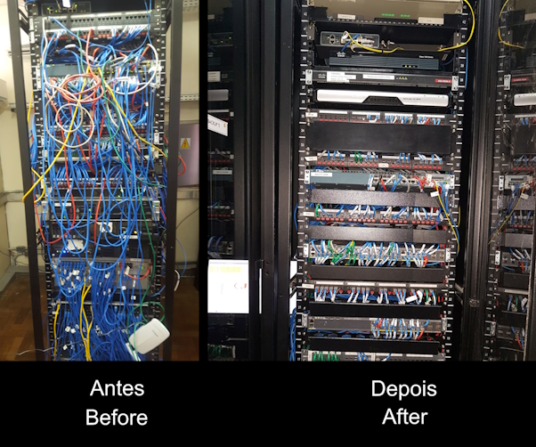

Natural de Bento Gonçalves. Um cara alegre, muito dedicado e comprometida em atingir meus objetivos. Sempre em busca do conhecimento, evolução e com coragem para enfrentar os desafios.
Seja Bem-Vindo

Comecei minha carreira de TI em 2005, em uma escola de informática como estagiário, auxiliando pessoas que precisavam executar tarefas em computadores, tais como trabalhos escolares ou pequenas manutenções.

| Escolaridade |
|---|
| Faculdade de Análise e Desenvolvimento de Sistemas - ADS |
| Pós Graduação em Gestão e governança de TI |
| Cursos |
|---|
| Microsoft Office |
| Windows Server |
| Curso de PHP |
| Curso de C# |
| Curso de HTML |
| Curso de CSS |
| Montagem e Manutenção de Computadores |
| Conheicmentos |
|---|
| Help Desk |
| Telecom |
| SQL |
| C++ |
| Arduino |
| CFTV |
| Cabeamento Estruturado |
| Gestão de TI |
| Manutenção completa de Computadores e Notebooks |
Alguns trabalhos de cabeamento estruturado, organização de Racks de TI, topologia de rede e limpeza de computadores. Todos seguindo as boas praticas de execussão.



Abaixo, segue um vídeo mostrando o trabalho de conclusão de curso realizado em 2015. Maquete utilizando Arduíno + Programação Web para solução completa de um estacionamento. O projeto foi batizado de FullParking Solutions e a maquete ficou exposta no local por um tempo. O vídeo foi feito de forma amadora por um celular e serve apenas para representar o conhecimento que tenho.